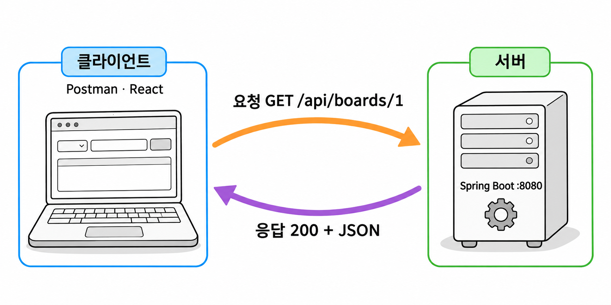
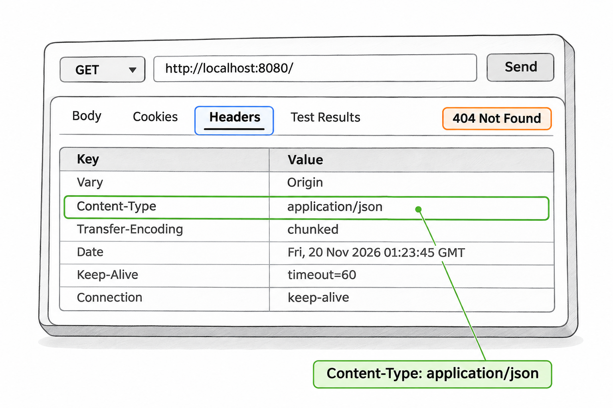

3장. REST API란?
1. HTTP의 개념
1.1 요청과 응답
HTTP(HyperText Transfer Protocol)는 클라이언트와 서버가 데이터를 주고받을 때 지키는 통신 규칙입니다. 클라이언트(client)는 요청을 보내는 쪽이고, 서버(server)는 요청을 받아 처리한 뒤 결과를 돌려주는 쪽입니다. 클라이언트가 보내는 메시지를 요청(request), 서버가 돌려주는 메시지를 응답(response)이라고 합니다.
이 책에서는 1장부터 만들어 온 Spring Boot 애플리케이션이 서버입니다. 클라이언트 자리는 이 장에서 설치할 Postman이 먼저 맡고, 후속 과정에서는 React로 만든 화면이 이어받습니다. 클라이언트가 바뀌어도 서버는 똑같은 HTTP 요청을 받고 똑같은 응답을 돌려줍니다.

그림 3-1처럼 서버는 먼저 말을 걸지 않습니다. 요청이 와야 일을 시작하고, 요청 하나에 응답 하나를 돌려줍니다.
HTTP에는 기억해 둘 성질이 하나 있습니다. 서버는 앞 요청을 기억하지 않습니다. 방금 로그인한 사용자가 다음 요청을 보내도, 서버는 그 요청만 보고는 누가 보냈는지 알 수 없습니다. 그래서 요청마다 "나는 누구다"를 증명할 정보를 실어 보내야 합니다. 이 문제를 토큰으로 해결하는 방법은 12장에서 다룹니다.
1.2 요청 라인 · 헤더 · 본문
HTTP 메시지는 사람이 읽을 수 있는 텍스트입니다. 요청은 첫 줄인 요청 라인(request line), 그 아래의 헤더(header), 빈 줄 하나, 그리고 본문(body) 순서로 이루어집니다.
기본 문법
메서드 경로 HTTP버전
헤더이름: 값
헤더이름: 값
본문요청 라인에는 무엇을 할지(메서드), 어디에 할지(경로), 어떤 HTTP 버전을 쓰는지가 들어갑니다. 헤더는 요청에 덧붙이는 정보를 이름: 값 형태로 한 줄에 하나씩 적습니다. 본문은 서버에 보낼 데이터입니다. 헤더와 본문 사이의 빈 줄은 헤더가 끝났다는 표시라서 빠뜨리면 안 됩니다.
회원가입 요청을 예로 들면 다음과 같습니다.
코드 조각
POST /join HTTP/1.1
Host: localhost:8080
Content-Type: application/json
Accept: */*
{"username": "love", "password": "1234", "email": "love@nate.com"}Content-Type은 본문이 어떤 형식인지 서버에 알려 줍니다. application/json이면 본문이 JSON이라는 뜻입니다. Accept는 클라이언트가 받고 싶은 응답 형식을 알려 줍니다. */*는 아무 형식이나 받겠다는 뜻입니다. 글 목록 조회처럼 서버에 보낼 데이터가 없는 요청은 빈 줄 뒤의 본문을 비워 둡니다.
응답도 모양이 비슷합니다. 첫 줄이 상태 라인(status line)이라는 점만 다릅니다.
기본 문법
HTTP버전 상태코드 상태문구
헤더이름: 값
본문코드 조각
HTTP/1.1 200 OK
Content-Type: application/json
{"status": 200, "msg": "성공", "body": {"id": 1, "title": "제목1", "content": "내용1", "userId": 1, "username": "ssar"}}상태 라인의 200 OK는 요청이 성공했다는 뜻입니다. 응답 헤더의 Content-Type은 이번에는 서버가 클라이언트에게 본문 형식을 알려 줍니다. 본문의 status · msg · body 세 칸은 이 책의 모든 API가 쓰는 공통 응답 모양이며, 6장에서 만듭니다.
헤더는 앞으로 여러 번 다시 나옵니다. 로그인한 사용자는 Authorization 헤더에 토큰을 담아 보내고(12장), React 화면이 응답에 담긴 이 헤더를 읽으려면 CORS 설정이 필요합니다(13장). 지금은 요청 라인 · 헤더 · 본문의 위치만 구분하면 됩니다.
1.3 상태 코드(200 · 400 · 401 · 403 · 404 · 500)
상태 코드(status code)는 서버가 요청을 어떻게 처리했는지 알려 주는 세 자리 숫자입니다. 클라이언트는 본문을 읽기 전에 이 숫자부터 보고 성공인지 실패인지 판단합니다. 종류는 첫 자리 숫자로 나뉩니다. 2로 시작하면 성공, 4로 시작하면 클라이언트가 요청을 잘못 보낸 경우, 5로 시작하면 서버 안에서 문제가 생긴 경우입니다.
이 책에서 쓰는 상태 코드는 다음 여섯 개입니다.
| 상태 코드 | 상태 문구 | 뜻 | 이 책에서 나오는 때 | 다루는 장 |
|---|---|---|---|---|
200 | OK | 요청 성공 | 조회 · 가입 · 글쓰기 등이 성공했을 때 | 6장부터 |
400 | Bad Request | 요청 내용이 잘못됨 | 아이디가 너무 짧거나 이메일 형식이 틀렸을 때 | 11장 |
401 | Unauthorized | 인증 실패(누구인지 모름) | 로그인 정보가 틀렸거나 토큰이 없을 때 | 12장 · 14장 |
403 | Forbidden | 권한 없음(누구인지는 알지만 허락 안 됨) | 남의 글을 고치려 하거나 일반 회원이 관리자 주소를 부를 때 | 15장 · 18장 |
404 | Not Found | 자원이 없음 | 없는 글 번호나 없는 주소를 요청했을 때 | 7장 |
500 | Internal Server Error | 서버 내부 오류 | 서버 코드에서 예상하지 못한 예외가 났을 때 | 7장 |
입문자가 가장 많이 헷갈리는 것이 401과 403입니다. 401은 서버가 요청한 사람이 누구인지 모르는 상태입니다. 403은 누구인지는 알지만, 그 사람에게 허락되지 않은 일을 요청한 상태입니다. 건물에 비유하면 401은 출입증이 없어 입구에서 막힌 것이고, 403은 출입증은 있지만 들어갈 수 없는 방의 문 앞에서 막힌 것입니다.
400 · 404와 500은 잘못이 어느 쪽에 있는지로 나뉩니다. 4로 시작하는 코드는 클라이언트가 요청을 고치면 해결되고, 500은 서버 코드를 고쳐야 해결됩니다. 그래서 없는 글을 요청했는데 500이 나가면 클라이언트는 자기 잘못인지 서버 고장인지 알 수 없습니다. 7장에서는 이런 경우를 404로 바로잡습니다.
2. REST API 설계 원칙
2.1 자원과 URI
API(Application Programming Interface)는 프로그램이 다른 프로그램의 기능을 쓰도록 열어 둔 창구입니다. 웹 서버의 API는 "이 주소로 이 메서드를 보내면 이런 응답을 준다"는 약속의 모음입니다. REST API는 이 약속을 정하는 대표적인 설계 방식입니다. 서버가 다루는 데이터를 자원(resource)으로 보고, 자원마다 주소를 붙여 HTTP로 주고받습니다.
자원을 가리키는 주소를 URI(Uniform Resource Identifier)라고 합니다. 이 책의 블로그에서는 글 목록, 글 한 개, 댓글, 회원이 자원입니다.
주소 하나는 다음 부분으로 나뉩니다.
| 부분 | 예 | 뜻 |
|---|---|---|
| 스킴 | http | 통신 규칙 |
| 호스트 | localhost | 서버가 있는 컴퓨터. localhost는 내 컴퓨터 |
| 포트 | 8080 | 그 컴퓨터에서 서버 프로그램이 요청을 기다리는 번호 |
| 경로 | /api/boards/1 | 서버 안의 자원 위치 |
| 쿼리 스트링 | ?page=0&keyword=스프링 | 조회 조건 등 덧붙이는 값 |
REST 방식에서는 경로를 정할 때 다음 규칙을 지킵니다.
첫째, 경로에는 자원 이름인 명사만 쓰고 동사는 넣지 않습니다. /getBoard, /deleteBoard처럼 하는 일을 주소에 적지 않습니다. 하는 일은 다음 항에서 다룰 HTTP 메서드로 나타냅니다.
둘째, 여러 개를 묶은 자원은 복수형으로 쓰고, 그중 하나는 뒤에 번호를 붙여 가리킵니다. /api/boards는 글 전체이고 /api/boards/1은 1번 글입니다. 경로 안의 이 번호를 경로 변수(path variable)라고 하며, 7장에서 @PathVariable로 꺼냅니다.
셋째, 자원을 고르는 조건은 쿼리 스트링으로 붙입니다. 쿼리 스트링은 ? 뒤에 이름=값을 &로 이어 적습니다. /api/boards?page=0&keyword=스프링은 "글 목록 가운데 제목에 '스프링'이 들어간 글의 첫 쪽"이라는 뜻입니다. 자원은 여전히 글 목록이고, 쿼리 스트링은 그 목록을 어떻게 보여 줄지만 정합니다. 이 값은 8장에서 @RequestParam으로 받습니다.
2.2 HTTP 메서드로 작업 나타내기
HTTP 메서드(HTTP method)는 자원에 어떤 작업을 할지 나타내는 요청 라인의 첫 단어입니다. 같은 주소라도 메서드가 다르면 다른 작업이 됩니다. /api/boards/1에 GET을 보내면 1번 글을 조회하고, DELETE를 보내면 1번 글을 삭제합니다.
| HTTP 메서드 | 하는 일 | 본문 | 블로그 API 예 |
|---|---|---|---|
GET | 자원 조회 | 보내지 않음 | GET /api/boards 글 목록, GET /api/boards/1 1번 글 |
POST | 자원 생성 | 만들 데이터 | POST /api/boards 글쓰기 |
PUT | 자원 수정 | 바꿀 데이터 | PUT /api/boards/1 1번 글 수정 |
DELETE | 자원 삭제 | 보내지 않음 | DELETE /api/boards/1 1번 글 삭제 |
GET은 데이터를 읽기만 하고 서버의 데이터를 바꾸지 않습니다. 그래서 같은 GET 요청을 여러 번 보내도 서버의 데이터는 그대로입니다. 서버에 넘길 데이터가 없으니 본문도 쓰지 않습니다. 반대로 POST와 PUT은 서버에 데이터를 넘겨야 하므로 본문에 JSON을 담습니다.
POST와 PUT은 대상이 다릅니다. POST는 아직 번호가 없는 새 자원을 만들기 때문에 목록 주소 /api/boards로 보냅니다. 새 글 번호는 서버가 정합니다. PUT은 이미 있는 자원을 고치므로 /api/boards/1처럼 번호가 붙은 주소로 보냅니다.
모든 작업이 자원 하나에 딱 맞아떨어지지는 않습니다. 로그인은 무언가를 조회하거나 만드는 일이라기보다 "인증"이라는 동작입니다. 이 책에서는 이런 주소에 /login처럼 동작 이름을 쓰고 POST로 보냅니다. 비밀번호 같은 값을 쿼리 스트링에 넣으면 주소에 그대로 드러나므로 본문에 담기 위해서입니다. 실무에서도 자원 규칙을 기본으로 지키되, 인증 같은 동작은 이렇게 예외로 두는 경우가 많습니다.
2.3 JSON 응답
REST API 서버는 화면(HTML)을 만들지 않고 데이터만 돌려줍니다. 화면은 데이터를 받은 클라이언트가 그립니다. 데이터 형식으로는 JSON(JavaScript Object Notation)을 가장 많이 씁니다. JSON은 이름과 값을 짝지어 적는 텍스트 형식입니다. 이름은 JavaScript에서 왔지만 자바를 비롯한 여러 언어에서 읽고 쓸 수 있습니다.
기본 문법
{
"이름": 값,
"이름": 값
}{ }로 감싼 것을 객체라고 하고, 그 안에 "이름": 값 쌍을 쉼표로 나열합니다. 이름은 반드시 큰따옴표로 감쌉니다. 값으로 쓸 수 있는 형식은 다음과 같습니다.
| 값 형식 | 예 | 자바에서 대응하는 값 |
|---|---|---|
| 문자열 | "제목1" | String |
| 숫자 | 1, 3.14 | int · long · double 등 |
| 불리언 | true, false | boolean |
| null | null | null |
| 객체 | { "id": 1 } | 객체(record 등) |
| 배열 | [1, 2, 3] | List 등 |
객체 안에 객체나 배열을 넣을 수 있어서, 글 목록처럼 여러 건인 데이터도 JSON 하나로 표현합니다.
코드 조각
[
{ "id": 2, "title": "제목2", "username": "ssar" },
{ "id": 1, "title": "제목1", "username": "ssar" }
]자바 객체를 이런 JSON 문자열로 바꾸는 코드는 개발자가 직접 쓰지 않습니다. Spring Boot의 웹 스타터에 들어 있는 JSON 라이브러리 Jackson(잭슨)이 그 일을 맡습니다. Controller가 객체를 반환하면 Jackson이 그 객체를 JSON으로 바꿔 응답 본문에 씁니다. 이때 응답의 Content-Type도 application/json으로 붙습니다. 요청 본문의 JSON을 자바 객체로 바꾸는 일도 Jackson이 합니다. Spring Boot 4는 Jackson 3을 쓰며, Jackson 3의 패키지 이름은 tools.jackson으로 시작합니다. 14장에서 Jackson 클래스를 직접 쓸 때 이 패키지 이름이 필요합니다.
3. API 테스트 도구 준비
3.1 Postman으로 요청 보내기
API를 만들면 요청을 보내 응답을 확인해 봐야 합니다. 브라우저 주소창으로는 GET 요청밖에 보낼 수 없고, 헤더나 본문을 넣기도 어렵습니다. 그래서 Postman(포스트맨)을 씁니다. Postman은 메서드 · 주소 · 헤더 · 본문을 정해 요청을 보내고, 응답의 상태 코드 · 헤더 · 본문을 나누어 보여 주는 프로그램입니다.
Postman 공식 사이트에서 데스크톱 앱을 내려받아 설치합니다. 요청을 저장해 두고 다시 쓰려면 왼쪽 Collections에서 blog 컬렉션을 하나 만듭니다. 앞으로 만드는 요청은 모두 이 컬렉션 안에 저장합니다.
PowerShell에서 .\gradlew.bat bootRun으로 서버를 실행합니다. 그다음 Postman에서 새 요청을 만들고 다음 값으로 보냅니다.
| 항목 | 값 |
|---|---|
| 메서드 | GET |
| 주소 | http://localhost:8080/ |
주소 칸 왼쪽에서 메서드를 고르고, 주소를 입력한 뒤 Send를 누릅니다.
실행 결과
응답 영역 오른쪽 위에 상태 404 Not Found가 표시되고, Body 탭에 다음 JSON이 보입니다(timestamp 값은 보낸 시각에 따라 다르고, trace는 매우 길어서 줄여 보였습니다).
{
"timestamp": "2026-11-20T01:23:45.678Z",
"status": 404,
"error": "Not Found",
"trace": "org.springframework.web.servlet.resource.NoResourceFoundException: No static resource for request '/'.\r\n\tat ... (이하 생략)",
"message": "No static resource .",
"path": "/"
}Postman에서 GET http://localhost:8080/을 보낸 직후 화면
아직 그림이 없습니다
아직 / 주소를 처리할 Controller가 없으니 404가 맞습니다. 서버가 요청을 받고 "그런 자원은 없다"고 상태 코드로 답한 것입니다. 응답 영역의 Headers 탭을 열면 Content-Type이 application/json인 것도 확인할 수 있습니다. trace와 message는 1장에서 넣은 devtools가 개발 중에만 덧붙이는 값입니다. 7장에서 다시 봅니다.
같은 주소를 브라우저로 열면 JSON 대신 Whitelabel Error Page라는 HTML 화면이 나옵니다. Spring Boot가 요청의 Accept 헤더를 보고 오류 응답의 형식을 고르기 때문입니다. 브라우저는 Accept 헤더로 HTML을 받겠다고 알리고, Postman은 기본으로 */*를 보내 아무 형식이나 받겠다고 알립니다. 1.2에서 본 Accept 헤더가 실제로 응답 형식을 바꾼 것입니다. 이 기본 오류 응답은 7장에서 이 책의 공통 응답 모양으로 바꿉니다.

생성형 예시 · 실제 실행 안 함
앞으로 Postman에서 자주 쓸 곳은 다음과 같습니다.
| 위치 | 쓰는 때 |
|---|---|
| Params 탭 | ?page=0처럼 주소 뒤에 붙는 쿼리 스트링을 넣을 때 |
| Headers 탭 | 로그인 뒤 받은 토큰을 Authorization 헤더에 넣을 때 |
| Body 탭 → raw → JSON | 회원가입 · 글쓰기처럼 JSON 본문을 보낼 때 |
| 응답의 Headers 탭 | 로그인 응답 헤더로 받은 토큰을 확인할 때 |
Body 탭에서 raw와 JSON을 고르면 Postman이 요청 헤더에 Content-Type: application/json을 알아서 넣어 줍니다. 이 헤더가 빠지면 서버는 본문을 JSON으로 읽지 않습니다.
3.2 완성할 블로그 API 한눈에 보기
이 책을 끝까지 따라 하면 다음 API가 완성됩니다. 접근 칸의 "누구나"는 로그인 없이, "로그인"은 로그인한 사용자만, "작성자"는 그 글이나 댓글을 쓴 사람만, "ADMIN"은 관리자만 호출할 수 있다는 뜻입니다.
| 메서드 | 주소 | 하는 일 | 접근 | 만드는 장 |
|---|---|---|---|---|
GET | /api/boards?page=0&keyword= | 글 목록(페이징 · 제목 검색) | 누구나 | 6장 · 8장 |
GET | /api/boards/{id} | 글 상세(댓글 포함) | 누구나 | 7장 · 16장 · 17장 |
POST | /join | 회원가입 | 누구나 | 10장 |
GET | /check-username?username= | 아이디 중복 확인 | 누구나 | 11장 |
POST | /login | 로그인(토큰 발급) | 누구나 | 12장 |
GET | /api/users/me | 내 정보 | 로그인 | 14장 |
POST | /api/boards | 글쓰기 | 로그인 | 15장 |
PUT | /api/boards/{id} | 글 수정 | 작성자 | 15장 |
DELETE | /api/boards/{id} | 글 삭제 | 작성자 | 15장 |
POST | /api/replies | 댓글 쓰기 | 로그인 | 16장 |
DELETE | /api/replies/{id} | 댓글 삭제 | 작성자 | 16장 |
PUT | /api/users/me | 내 정보 수정 | 로그인 | 17장 |
GET | /api/admin/hello | 관리자 확인 | ADMIN | 18장 |
DELETE | /api/admin/boards/{id} | 관리자 글 삭제 | ADMIN | 18장 |
PUT | /api/admin/users/{id} | 회원 역할 바꾸기 | ADMIN | 18장 |
POST | /reissue | 액세스 토큰 재발급 | 누구나(리프레시 토큰 필요) | 19장 |
POST | /logout | 로그아웃(리프레시 토큰 폐기) | 누구나(리프레시 토큰 필요) | 19장 |
표의 주소는 2절의 규칙을 따릅니다. 글은 /api/boards와 /api/boards/{id} 두 주소에 메서드만 바꿔 조회 · 생성 · 수정 · 삭제를 나타냅니다. {id} 자리에는 실제 요청에서 1처럼 글 번호가 들어갑니다.
주소는 두 갈래로 나뉩니다. /api로 시작하는 주소는 게시글 · 댓글 · 회원 정보처럼 블로그의 데이터를 다룹니다. /join · /login · /reissue처럼 /api가 없는 주소는 회원가입과 인증을 맡습니다. 이렇게 나눠 두면 14장에서 "/api 아래는 로그인해야 한다" 같은 접근 규칙을 주소 모양만으로 정할 수 있습니다.
모든 API는 성공하든 실패하든 status · msg · body 세 칸으로 된 같은 모양으로 응답합니다. 이 모양은 6장에서 만듭니다. 20장에서는 표의 API를 회원가입부터 로그아웃까지 Postman으로 차례로 호출하며 전체를 점검합니다. 그 뒤 23장에서 파일 업로드 API를 하나 더 만들고, 24장에서 이 API들을 문서로 정리합니다.